Chapter 5 Figure 1
5.1 1.1(A) Routine Analyses
5.1.1 Batch removal
library(dplyr)
library(ggplot2)
# SERRF校正前
before_normalization_raw <- data.table::fread("raw_data/test_for_serrf.txt") %>%
as.data.frame()
before_normalization <- before_normalization_raw %>%
t() %>%
as.data.frame() %>%
filter(!V4 %in% c("No","label"))
names(before_normalization) <- as.character(before_normalization_raw[,2])
names(before_normalization)[4] <- "sample_id"
# pca
before_batch <- as.character(before_normalization_raw[1,-c(1,2)])
before_type <- as.character(before_normalization_raw[2,-c(1,2)])
before_sample_id <- as.character(before_normalization_raw[4,-c(1,2)])
dd <- data.frame(type=before_type,batch=before_batch,sample_id=before_sample_id)
mydata_pca <- apply(before_normalization[,5:ncol(before_normalization)],2,as.numeric)
pca <- prcomp(log2(mydata_pca+1), center = T, scale. = T)
variance = pca$sdev^2/sum(pca$sdev^2)
pca.data = data.frame(pca$x,type=before_type,batch=before_batch,sample_id=before_sample_id)
p1 <- ggplot(pca.data,aes(PC1,PC2,color=type,shape=before_batch))+
geom_point()+
scale_color_manual(values=c("red","#3e68a0"))+
scale_shape_manual(values=seq(0,length(unique(before_batch))-1))+
#geom_text(aes(label=sample_id))+
theme_bw()+
theme(panel.grid.major = element_blank(),panel.grid.minor = element_blank())+
labs(x=paste0("PC1 (",signif(variance[1]*100,3),"%)"),
y=paste0("PC2 (",signif(variance[2]*100,3),"%)"))
# SERRF校正后
after_normalization_raw <- read.csv("raw_data/normalized by - SERRF.csv") %>%
as.data.frame() %>%
dplyr::distinct(label,.keep_all = T) %>%
tibble::column_to_rownames("label") %>%
t() %>%
as.data.frame() %>%
tibble::rownames_to_column(var="sample") %>%
dplyr::mutate(sample=gsub("X","",sample)) %>%
tibble::column_to_rownames("sample")
after_sample_id <- rownames(after_normalization_raw)
after_dd <- data.frame(sample_id=after_sample_id) %>%
dplyr::left_join(dd,by="sample_id")
mydata_pca <- apply(after_normalization_raw,2,as.numeric)
pca <- prcomp(log2(mydata_pca+1), center = T, scale. = T)
variance = pca$sdev^2/sum(pca$sdev^2)
pca.data = cbind(pca$x,after_dd)
p2 <- ggplot(pca.data,aes(PC1,PC2,color=type,shape=batch))+
geom_point()+
scale_color_manual(values=c("red","#3e68a0"))+
scale_shape_manual(values=seq(0,1))+
#geom_text(aes(label=sample_id))+
theme_bw()+
theme(panel.grid.major = element_blank(),panel.grid.minor = element_blank())+
labs(x=paste0("PC1 (",signif(variance[1]*100,3),"%)"),
y=paste0("PC2 (",signif(variance[2]*100,3),"%)"))
ggsave("result/fig1/01.pca_raw.pdf",p1,width=5,height = 3.9)
ggsave("result/fig1/01.pca_normalization.pdf",p2,width=5,height = 3.9)
ggsave("result/fig1/01.pca_raw.png",p1,width=5,height = 3.9)
ggsave("result/fig1/01.pca_normalization.png",p2,width=5,height = 3.9)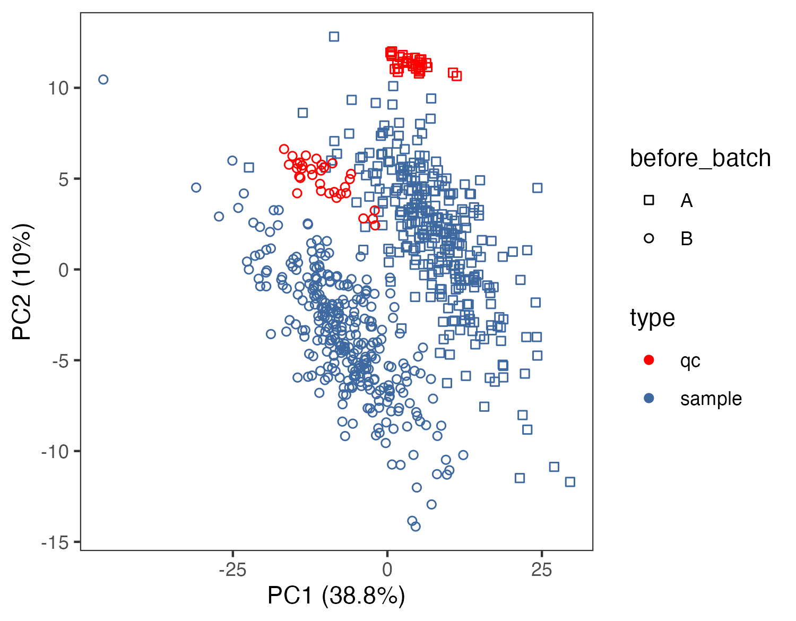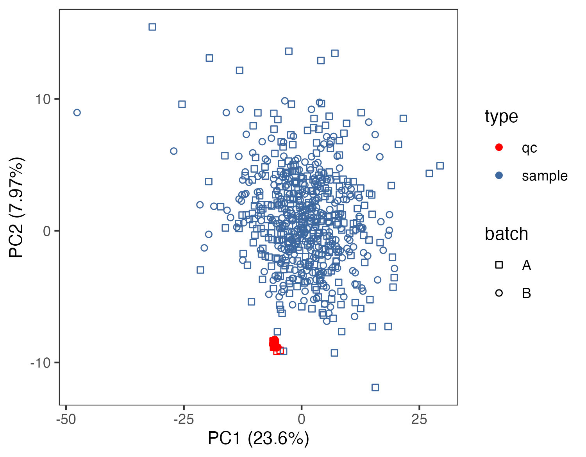
5.1.2 Metabolite information
compound_name <- c("2-hydroxybutyric acid","1-methyladenosine","2-Aminooctanoic")
refmetid_result <- name2refmet(compound_name)
write.table(refmetid_result,"result/fig1/refmetid_result.txt",sep = "\t",quote = F,row.names = F)
refmet_kegg <- name2keggid(refmetid_result$Refmet_name)
result_pathway <- keggid2pathway(refmet_kegg$KEGG_id)
result <- refmetid_result %>%
dplyr::left_join(refmet_kegg,by=c("Refmet_name"="Name")) %>%
dplyr::left_join(result_pathway,by=c("KEGG_id"="ENTRY")) %>%
dplyr::select(Input_name,Refmet_name,KEGG_id,PATHWAY,everything())
write.table(result,"result/fig1/result_all.txt",sep = "\t",quote = F,row.names = F)5.1.3 Metabolite and metabolic pathway annotation
library(dplyr)
library(MNet)
library(ggplot2)
meta_name <- data.frame(name=substr(rownames(meta_dat),start=1,stop=6)) %>%
dplyr::left_join(all_kegg_id,by=c("name"="ENTRY")) %>%
dplyr::distinct(name,.keep_all = T)
meta_subtype <- name2refmet(meta_name$NAME)
write.table(meta_name,"result/fig1/02.annotation_subclass.txt",quote=F,row.names=F)
dd <- meta_subtype %>%
dplyr::group_by(Super_class) %>%
dplyr::summarise(n=n()) %>%
dplyr::filter(!is.na(Super_class)) %>%
dplyr::arrange(desc(n))
dd$Super_class <- factor(dd$Super_class,levels = dd$Super_class)
p <- ggplot(dd,aes(Super_class,n,fill=Super_class))+
geom_bar(stat="identity")+
theme_bw()+
scale_y_continuous(expand = c(0.01, 0.01))+
theme(axis.text.x = element_text(angle = 45, hjust = 1))
ggsave("result/fig1/02.annotation.pdf",width=8,height = 6)
ggsave("result/fig1/02.annotation.png",width=8,height = 6)
d <- PathwayExtendData %>%
dplyr::select(kegg_pathwayname,kegg_category) %>%
unique() %>%
dplyr::group_by(kegg_category) %>%
dplyr::summarise(n=n()) %>%
dplyr::arrange(n)
d$kegg_category <- factor(d$kegg_category,levels=d$kegg_category)
cols <- c(RColorBrewer::brewer.pal(9,'YlOrRd')[1:2],RColorBrewer::brewer.pal(9,'Reds'))
p1 <- ggplot(d,aes(kegg_category,n,fill=kegg_category))+
geom_bar(stat="identity")+
theme_bw()+
scale_y_continuous(expand = c(0.01, 0.01))+
#theme(axis.text.x = element_text(angle = 45, hjust = 1))+
scale_fill_manual(values=cols)+
coord_flip()
p1
ggsave("result/fig1/02.annotation_pathways.pdf",p1,width=10,height = 6)
ggsave("result/fig1/02.annotation_pathways.png",p1,width=10,height = 6)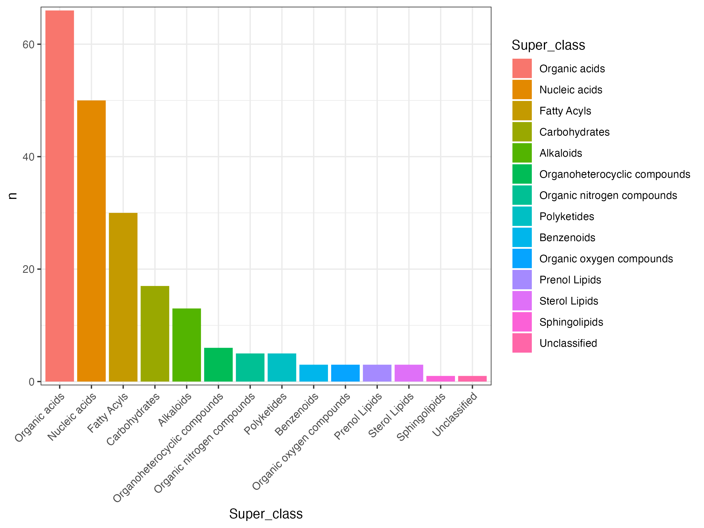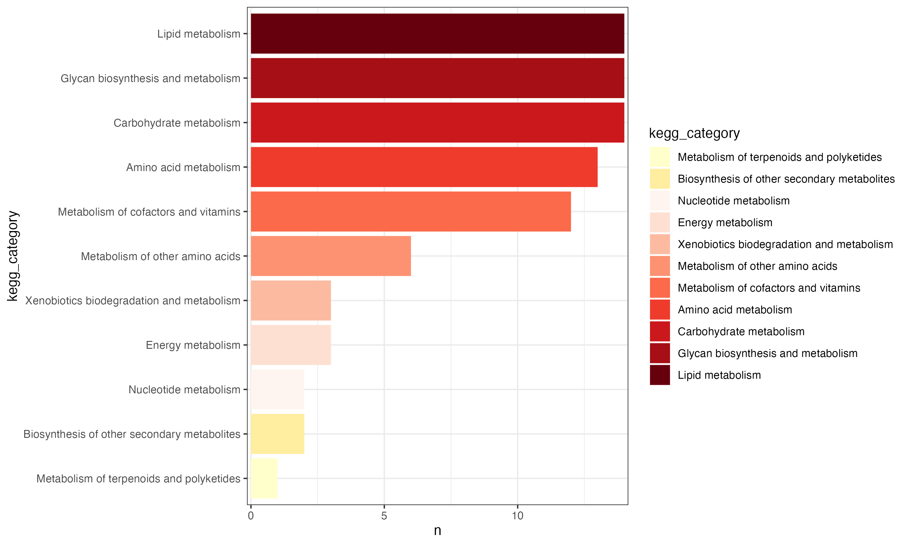
5.1.5 Time series analysis
names(clinical_index)[3] <- "1-methyladenosine"
clinical_index <- clinical_index %>%
dplyr::mutate(group=ifelse(group=="A","tumor","normal"))
time_series_ALT <- pCliTS(clinical_index,"1-methyladenosine")
ggsave("result/fig1/clinical_time_series.pdf",time_series_ALT,width=7,height = 5)
ggsave("result/fig1/clinical_time_series.png",time_series_ALT,width=7,height = 5)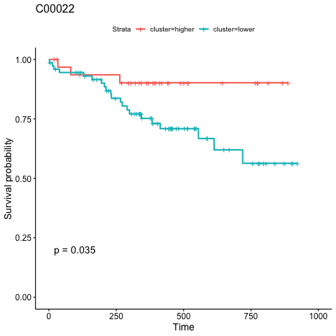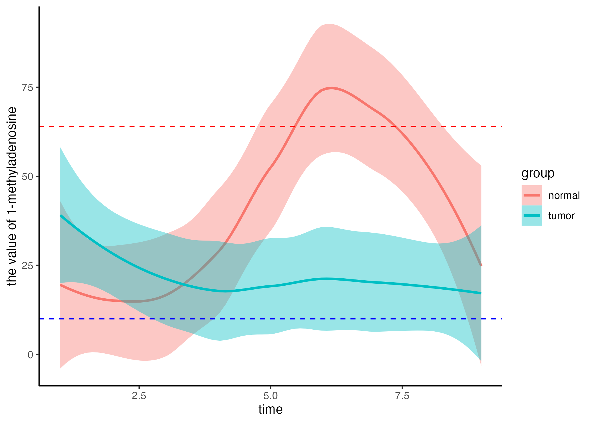
5.1.6 Group info
5.1.6.1 Dimension reduction & Visualization
library(MNet)
library(ggplot2)
##### limma
group <- c(rep("tumor",24),rep("normal",7))
result_mlimma_all <- mlimma(meta_dat,group)
write.table(result_mlimma_all,"result/fig1/result_mlimma_all.txt",quote=F,row.names=F,sep="\t")
##### PCA
p_out <- pPCA(meta_dat,group)
ggsave("result/fig1/03.PCA_p2.pdf",p_out$p2,width=8,height = 6)
ggsave("result/fig1/03.PCA_p2.png",p_out$p2,width=5,height = 3.9)
##### OPLS-PCA
pdf("result/fig1/03.tt.opls-da.pdf")
result_DM_all <- DM(2**meta_dat,group)
dev.off()
oplsda <- ropls::opls(t(myscale(meta_dat,method="raw_zscore")), group, predI = 1, orthoI = 1)
sample.score <- data.frame(oplsda@scoreMN,group=group,o1=oplsda@orthoScoreMN[,1],
label=rownames(oplsda@scoreMN))
p <- ggplot(sample.score,aes(p1,o1,color=group))+
geom_hline(yintercept=0,linetype="dashed",size=0.5)+
geom_vline(xintercept=0,linetype="dashed",size=0.5)+
geom_point(size=1.9)+
ggplot2::geom_text(ggplot2::aes(label=label),size=1)+
stat_ellipse()+
scale_color_manual(values =c("#00599F","#D01910"))+
theme_bw()+
labs(x="p1 (20%)")
#p
ggsave("result/fig1/03.p.opls-da.pdf",p,width=5,height = 4.5)
ggsave("result/fig1/03.p.opls-da.png",p,width=5,height = 4.5)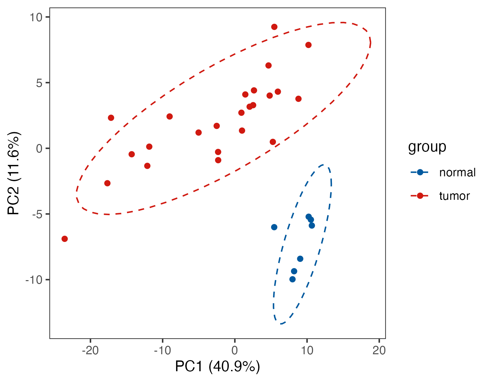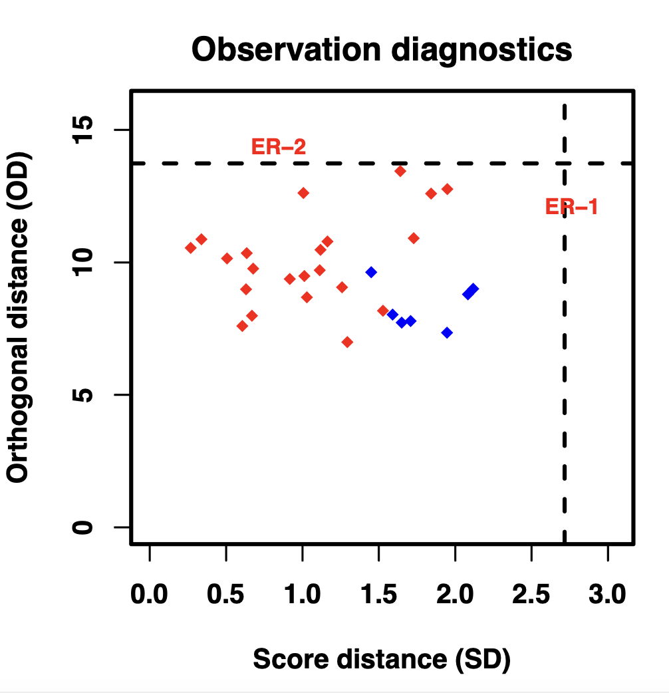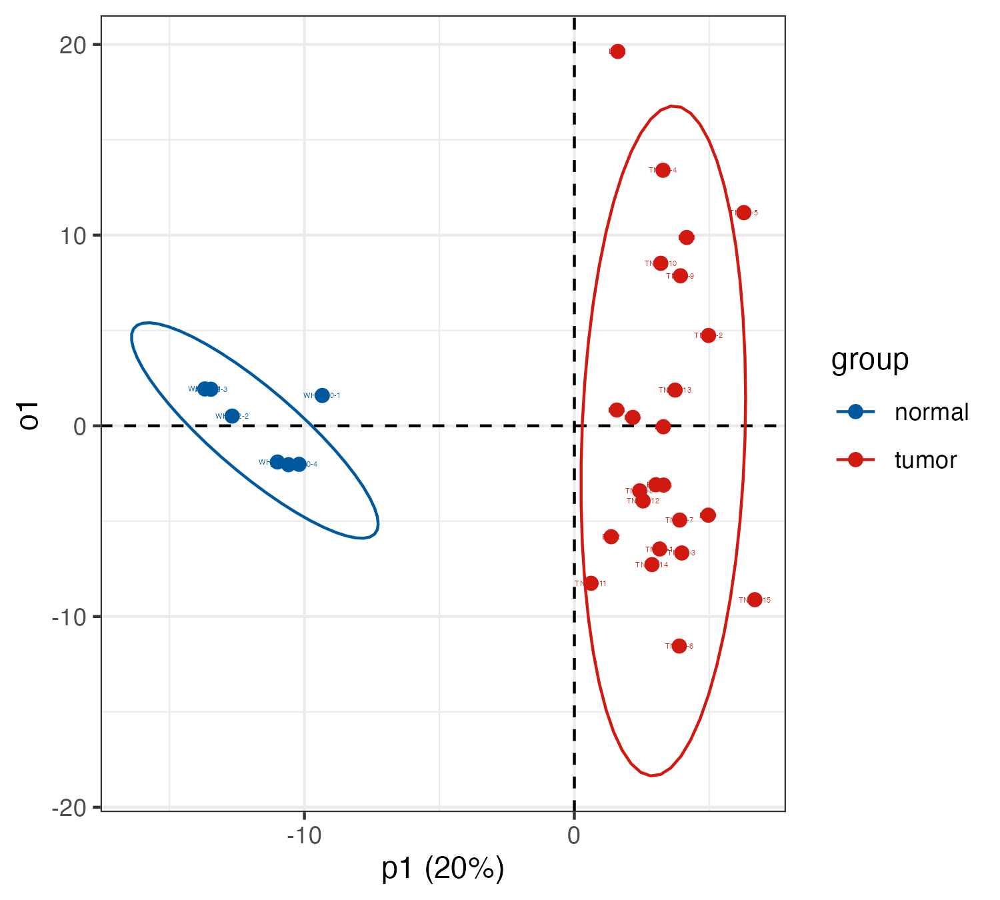
5.1.6.2 Differential metabolite visualization
5.1.6.2.2 Heatmap
result_mlimma_filter <- result_mlimma_all %>%
dplyr::filter(abs(logFC) > 1) %>%
dplyr::filter(`adj.P.Val` < 0.05)
dat_filter <- meta_dat %>%
tibble::rownames_to_column(var="label") %>%
dplyr::filter(label %in% result_mlimma_filter$name) %>%
tibble::column_to_rownames("label") %>%
head(n=10)
pdf("result/fig1/03.p_heatmap.pdf",width=5,height = 5)
p_heatmap <- MNet::pHeatmap(dat_filter,group,clustering_distance_cols ="manhattan",
clustering_method="ward.D",fontsize_row=3)
dev.off()
png("result/fig1/03.p_heatmap.png", width = 8, height = 7, units = 'in', res = 200 )
p_heatmap <- MNet::pHeatmap(dat_filter,group,clustering_distance_cols ="manhattan",
clustering_method="ward.D",fontsize_row=3)
dev.off()5.1.6.3 Pathway enrichment analysis
5.1.6.3.1 PEA
dat_increase <- result_mlimma_all %>%
dplyr::filter(logFC > 0.58) %>%
dplyr::filter(P.Value < 0.05)
dat_decrease <- result_mlimma_all %>%
dplyr::filter(logFC < -0.58) %>%
dplyr::filter(P.Value < 0.05)
kegg_all <- unique(c(dat_increase$name,dat_decrease$name))
pathway_result <- PathwayAnalysis(kegg_all,out="metabolite")
ggsave("result/fig1/04.pathway_enrichment.pdf",pathway_result$p_barplot,width = 8,height = 5)
ggsave("result/fig1/04.pathway_enrichment.png",pathway_result$p_barplot,width = 8,height = 5)5.1.6.3.3 MSEA
dd_arrange <- result_mlimma_all %>%
dplyr::arrange(logFC)
d_logFC <- dd_arrange$logFC
names(d_logFC) <- dd_arrange$name
result_msea <- MSEA(d_logFC)
result_msea <- result_msea %>%
dplyr::mutate(leadingEdge=as.character(leadingEdge))
write.table(result_msea,"result/fig1/04.MSEA.txt",quote=F,row.names=F,sep="\t")
p_MSEA <- pMSEA("Pyrimidine metabolism",d_logFC)
ggsave("result/fig1/04.p_MSEA_pyrimidine.pdf",p_MSEA,width=5,height = 4)
ggsave("result/fig1/04.p_MSEA_pyrimidine.png",p_MSEA,width=5,height = 4)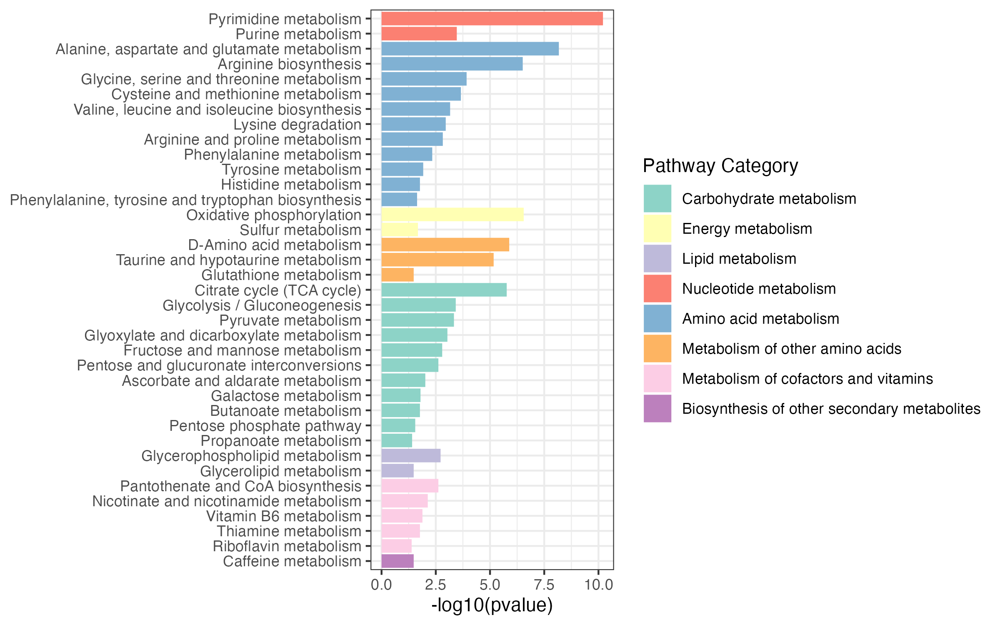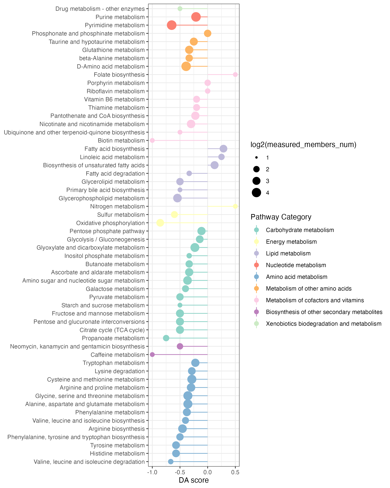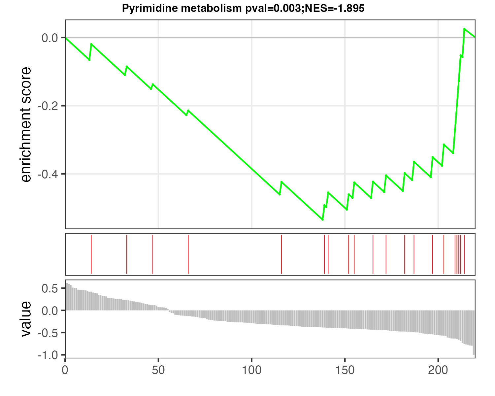